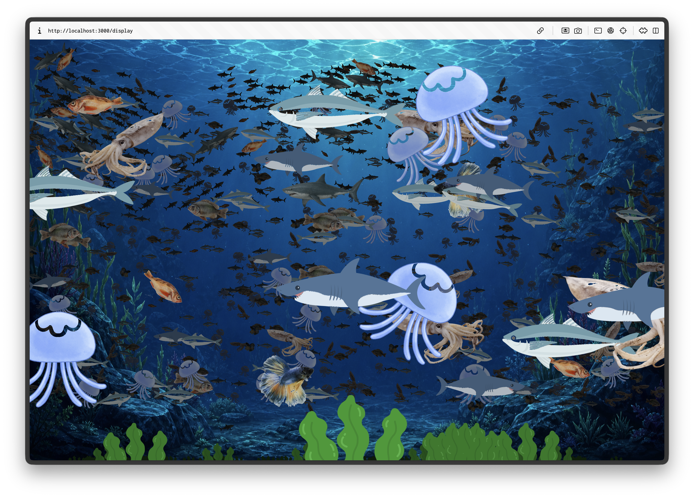
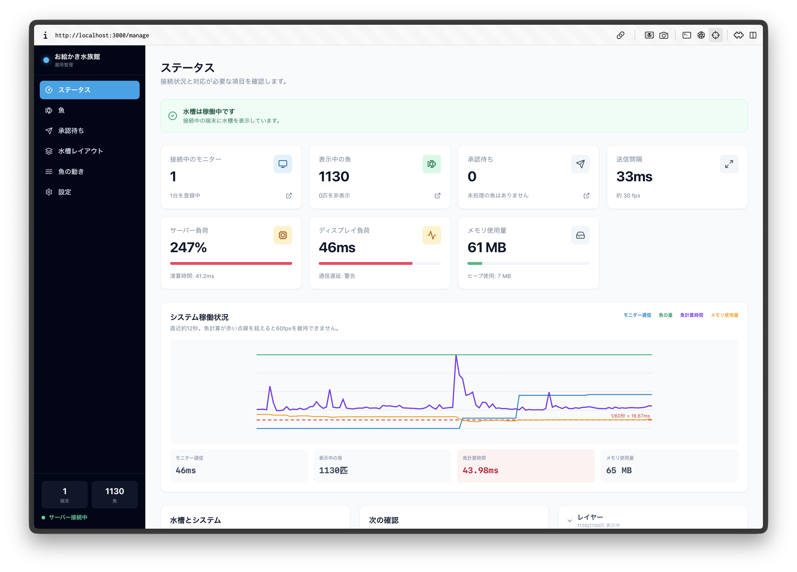
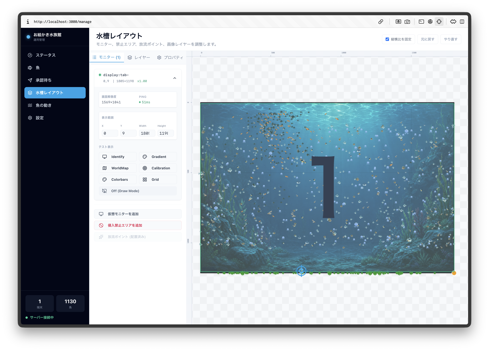
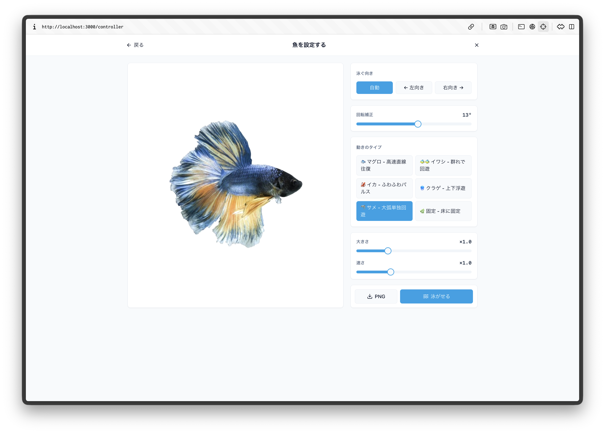
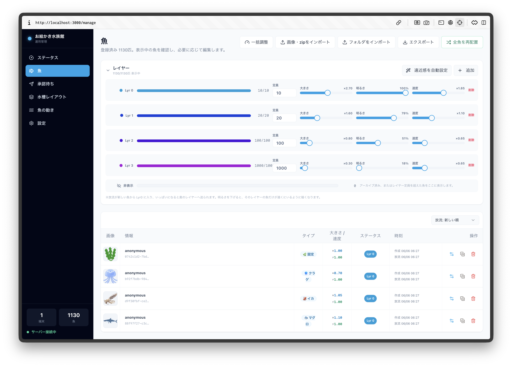

おえかき水族館
自分で描いた魚が巨大な仮想水槽を泳ぎ回る。来場者のアナログな体験から、Bun/Hono/WebSocketによる60fps分散同期システムまでを統合したおえかき水族館ガイド。


水族館の歩き方（体験フロー）
紙に魚を描くアナログな楽しさと、デジタルアートの魅力が滑らかに連動するステップ。
お絵描きとスキャン
用紙に好きな魚を自由に描きます。設置されたカメラやスキャナーにセットすると、AI背景透過処理が自動実行されます。
放流前のカスタマイズ
タブレット上で、魚の大きさ、泳ぐ速度、動き（イワシの群れ、イカ、マグロなど）を選んで「放流ボタン」を押します。
巨大水槽へ放流
放流された魚は複数の巨大モニターが連結された「仮想水槽」へ瞬時に飛び込み、核心的な物理シミュレーションに基づいて自律的に泳ぎ始めます。
スマホからエサやり
お手持ちのスマートフォンでQRコードを読み込むと、画面をタップして水槽の魚たちへリアルタイムにエサをあげられます。
複数ディスプレイ前提のマルチパネル同期
巨大水槽を表現するために「最初から複数ディスプレイ（マルチパネル）のシームレスな同期稼働」を前提として開発されています。役割ごとにクリーンに分離されたシステム構成です。

管理コンソール `/manage`
仮想水槽のサイズ変更や接続ディスプレイのViewport配置、進入禁止エリア（Forbidden Zones）、画像レイヤーを直感的にレイアウトするReactアプリケーション。
描画クライアント `/display`
展示モニターで動作するPixiJS 8レンダラー。サーバーから約60fpsで配信される魚座標情報を目標値とし、クライアント側で滑らかに補間描画（WebGL）します。

放流 & スマホ体験
魚の承認待ちリストから手書きパス等を設定して放流するコントローラー(`/controller`)や、スマホからエサをやれる来場者アプリ(`/guest`)を提供します。
テクノロジースタック
この高速な分散レンダリング水槽を構成する、厳選された最先端の技術スタック。
技術的な英断：UDP通信からWebSocket同一ポート統合へ
初期構想（SPECIFICATION.md）ではUDPマルチキャストによる通信分離が想定されていましたが、実展示での環境構築コストやブラウザ制約、設営のシンプル化を考慮し、**「すべての通信（静的ファイル、API、WebSocket）を単一のBun
3000番ポートへ統合」**
する設計へと進化しました。これにより、現場でのローカルネットワーク設定が不要になり、誰でも
bun dev
一発で安全に設営・稼働させられる高いポータビリティを獲得しました。
リアルタイム通信と同期設計
サーバーと各モニター（Display）、および管理画面（Manage）の間でどのようなデータがやり取りされているかを可視化。
サーバー主導・クライアント補間の極意
魚の泳ぎロジックや衝突判定はすべてサーバー側で集中処理されます。クライアント側（ディスプレイ）は、サーバーから送られてくる魚座標情報（目標値）に対し、PixiJSのレンダリングループを用いて補間（Lerp）を実行。これにより、ネットワークパケットの揺れや遅延に左右されない、滑らかで美しい60fpsの表現力を実現しました。
管理画面から魚の座標をドラッグ移動させると、即時HTTP API経由でサーバー上の魚の座標状態が上書きされ、次のフレーム配信周期（16ms）でモニターへリアルタイム反映されます。
Scanner / AI Node
rembg (背景透過)Controller
魚の編集・放流Bun Server (Hono)
物理演算ループ (16ms) // WebSocket配信Display A (PixiJS)
Viewport x: 0~1920Display B (PixiJS)
Viewport x: 1920~3840WebSocket イベント & データ通信仕様
モニター ⇔ サーバー通信
モニター起動時にUUID（例:
display:left）と物理解像度（hardware: { w, h }）を登録。再起動後もViewportを即時復元。
約60fps（16ms間隔）のメイン座標ストリーム。パケット削減のため魚IDは8文字に短縮。座標（x, y）、速度ベクトル（vx）、向き（d）、回転角、サイズ、透明度、魚アセットURLを全モニターへブロードキャスト。
10秒ごとに双方向生存確認。120秒間応答がない場合は切断とみなし、ソケットのバッファオーバーフローを防止。
管理画面 ⇔ サーバー通信
管理画面上でViewportをドラッグ中に、該当ディスプレイにのみリアルタイムで仮表示領域をプレビュー配信するWebSocketイベント（DB非保存）。
ドラッグ終了時に、確定したViewport（x, y, w, h）をHTTP
API（PUT /api/clients/:uuid/viewport）で保存。サーバー内のWorld構成設定を永続更新。
接続ディスプレイ一覧の変更や、スキャンによる新規魚のPending追加をリアルタイムに通知。ロック（排他編集）状態も管理。
5つの生物物理モデル
各魚種の生態にアプローチした数理的な動きをサーバー側（physics/）で常時シミュレートしています。
マグロ // Kick-and-Glide
高速で水平に泳ぎ続ける回遊魚モデル。
- 推進トルク: 尾鰭の左右運動の位相に同期して、瞬間的な加速とスライド減速を繰り返すKick-and-Glide物理。
- 水平巡航: 縦方向の最大速度制限を厳しく制限し、無駄な上下運動をカット。
- 自律深度変更: バイオリズムに従い、一定時間ごとに別の遊泳深度へ移動。
const kickPulse = cosPhase * cosPhase;
const kickFactor = 0.91 + kickPulse * 0.18;
const targetVX = speed * state.speedFactor * kickFactor;
vel.x += (targetVX - vel.x) * accel;イワシの群れ // FOV Boids
視野角制限を加えたBoids（群れ）アルゴリズムモデル。
- 視野角制限: 進行方向から背後120度（内積 < -0.5）の魚をブラインド。集団に集まるのではなく、前の魚に順繰りに追尾して帯状の「ストリーム」を形成。
- 個体別速度ゆらぎ: 各個体に速度の倍率差を設定し、群れの中で追い抜きが生じる自然な動き。
// 進行方向ベクトルからの視野制限判定
const dot = (toOtherX / dist) * hx + (toOtherY / dist) * hy;
if (dot < -0.5) continue; // 視界外イカ // Jet Pulse & Hover
漏斗からのパルス噴射と、ふわふわとしたホバリング。
- 間欠パルス: 周期の25%のみ急加速（噴射）し、それ以外の期間はドラッグ抵抗でスライド減速。
- スプリング弾性追従: Y座標は目標値へばね弾性力（スプリング力）で穏やかに引き寄せ、上昇の余韻でフワッと揺らぐホバリング。
// 弾性力による浮遊ホバリングの計算
const springForce = (targetY - pos.y) * 0.02;
vel.y = (vel.y + springForce) * 0.88;クラゲ // Jet-and-Sink
傘を開閉して推進し、自重でゆっくり沈降する非対称モデル。
- 非対称フェーズ: 推進期（25%）と弛緩期（75%）を設計。推進期は上向きに推進し、弛緩期は自重でゆっくりと沈降。
- 動的追従係数: 推進期はばね定数を強く（`0.018`）して急上昇させ、弛緩期は弱く（`0.004`）して慣性沈降を阻害しない設計。
if (isPushing) {
ay -= pulseForce; springK = 0.018;
} else {
ay += sinkRate; springK = 0.004;
}サメ // Angular Velocity Inertia
角速度の慣性を備え、大弧を描く優雅な旋回シミュレーション。
- 角速度の慣性モデル: 角度変化に慣性を加え、急旋回を物理的に防止。前フレームの角速度を90%維持しながら操舵。
- 優雅な衝突回避: 壁や障害物の手前でも、角速度の慣性を経て大きな弧を描きながら滑らかに向きを変更。
state.angularVelocity += (desiredAngularVel - state.angularVelocity) * 0.10;
state.angularVelocity = clamp(state.angularVelocity, -maxAngVel, maxAngVel);
state.angle += state.angularVelocity;ところてん方式レイヤーシステム
放流時刻に基づいて魚を自動的に前景・中景・遠景へ割り当て、パララックス（視差効果）による美しい奥行き感を創り出します。
Layer 0: 前景 (Foreground)
Max 10 // Scale 1.0手前を素早く泳ぎ回る、標準スケール・高彩度の魚。最も近くに見えるレイヤー。
Layer 1: 中景 (Midground)
Max 20 // Scale 0.7やや縮小し、わずかに半透明（80%）に描画される中間層。適度な視差効果を生み出す。
Layer 2: 遠景 (Background)
Max 50 // Scale 0.4小さく霞み（透明度40%）、パララックス効果でゆっくり泳ぐ背景層。最も深い奥行きを構築。

玉突き自動負荷調整
新しく放流された魚が新しい順（releasedAt降順）に前景へ追加され、古い魚は順に奥へと押し出されます。定員（計80匹）から溢れた魚は、自動的に非表示になり描画・計算負荷を抑制します。
ピン留め機能 (isPinned)
管理画面からピン留めされた魚は、ところてん方式の押し出しから除外され、指定したお気に入りのレイヤーに永続的に配置・固定表示されます。
展示現場のための堅牢性設計
常設展示の最前線で絶対に止めないための、実用性に根ざした設計思想。
スリープ・通信復帰対策
Screen Wake Lock APIを要求して常時稼働。タブがバックグラウンドから復帰した際は自動的にWake Lockを再要求。通信が30秒以上途絶した場合は自動的にWebSocket再接続を試みます。
512KB 送信キュー間引き
低速通信下、あるいはスリープ中のクライアントのWebSocketバッファが512KBを超えた時点で、古いフレーム座標の送信をスキップ。サーバーのソケット詰まりと負荷を確実に保護します。
DB不使用・ファイルベース管理
外部データベースを一切使用せず、「画像ファイルがあれば描画する」という極めて単純な仕組みを採用。PNG画像のメタデータ（tEXtチャンク）に設定を直接書き込んでおり、OSのエクスプローラーやFinderから画像を直接コピー・削除するだけで魚の管理やバックアップを安全に行えます。
自動補正 (Auto-Process)
アップロード時のEXIF向き補正、用紙背景の自動透過、トリミング、1024px正規化まで一元自動処理。
進入禁止 (Forbidden Zones)
柱や壁、映像の映らない遮蔽領域を設定でき、魚が領域に近づくと自動的に押し戻し反発する回避物理を実装。
9種のテストパターン
プロジェクター設営に必須なIdentify（画面番号表示）やCalibration（全面調整）、世界座標グリッドを標準装備。
現地環境パラメータチューニング
現地のプロジェクター投影サイズや部屋の広さ、マシンスペックに合わせ、魚の速度や大きさを管理画面からピクセル単位で細かく微調整可能です。